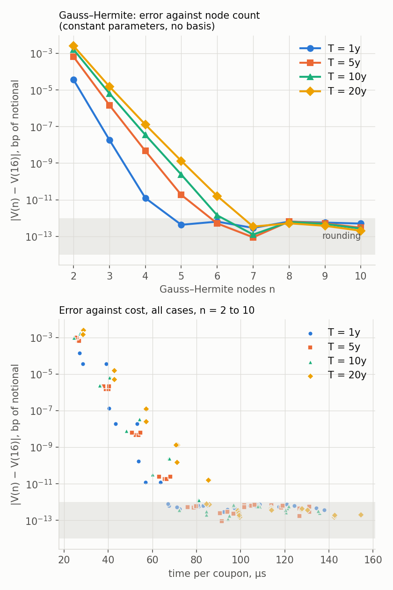
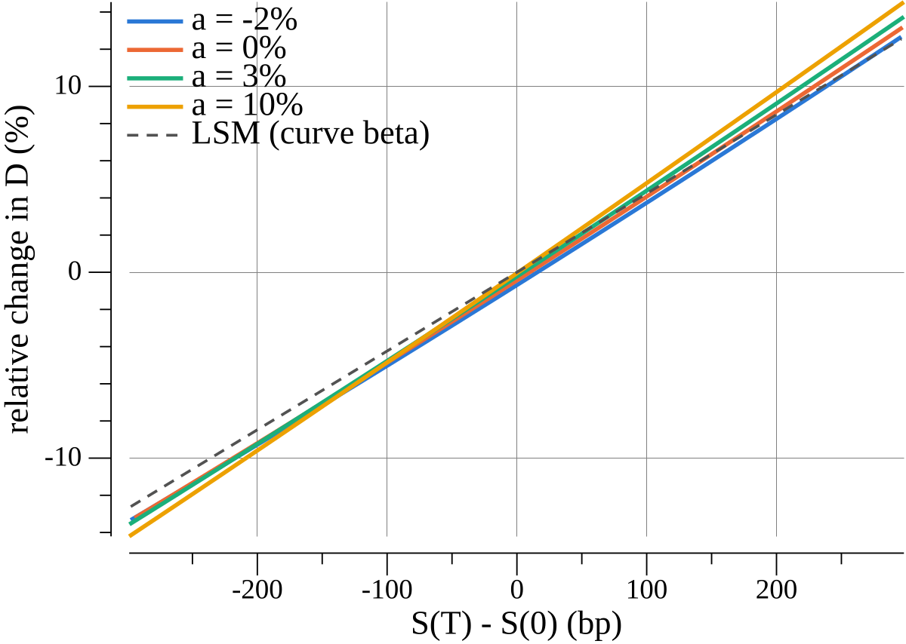
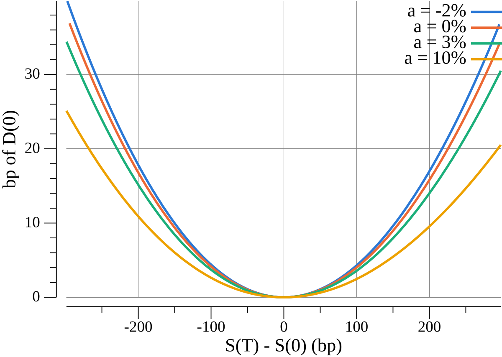
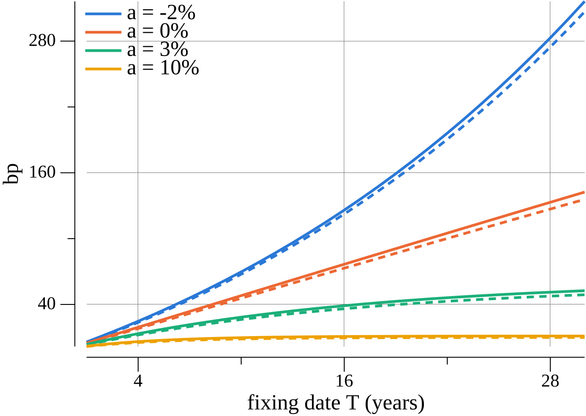
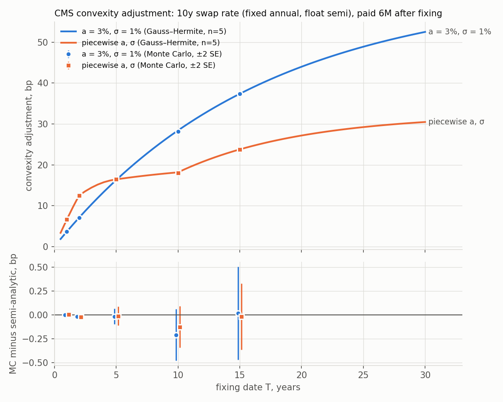

About 9 minutes to read (1,294 words)
Discussing interest rate derivatives can sometimes be more time consuming than discussing say, equity derivatives, due to the fact that the "spot" object is not a single number but rather a one-dimensional term structure, quoted in the market using several types of par rates or coupons that are then used to imply a curve. In this post, I will assume that the reader is somewhat familiar with the idea of having a discount curve, with which future cashflows are discounted to present date, and a forecasting curve, which is used to compute coupons associated to these future cashflows. The forecasting curve usually stands a few basis points over the discount curve, since discounting factors are based of what are known as risk-free rates (RFRs), while future coupons are contingent, among others, on the credit worthiness and liquidity of the financial institution guaranteeing them. For example, on 19-11-2026, the 6 month EURIBOR fixed at 3.043% while ESTR fixed at 2.441%, for a 60bp basis.
A constant maturity swap (CMS) coupon pays, at some date $T_p$, the value of this swap rate $S(T_f)$ that fixed at an earlier date $T_f$. At first sight this may look like a linear product: the forward swap rate $S(0)$ is the market's expectation of $S(T_f)$, so the coupon should be worth $P(0,T_p) S(0)$. If you check CMS par-rates against this guess and plot the difference, you will see an obvious pattern: the difference looks a bit like $\sqrt{T_p}$, so you will suspect that there is some volatility calculation playing a role in how market participants are quotign CMS rates, and you would be right. Not completely right, but at least going in the correct direction.
First, the swap rate is an expectation, but it is one under a specific measure. The coupon we are interested in is computed as the expectation of a future cash flow at time $T_p$ using the $T_p$-forward measure, where we denominate things using $P(t,T_p)$. However, $S(t)$ is a martingale under the measure $\mathbb Q^A$ that has the annuity $A$ as numéraire, so $S(0) = \mathbb E^A(S(T))$ is computed in a different way. Changing numéraire [4] from $P(t,T_p)$ to $A(t)$, we see that $$ \mathsf{CMS}(0) = \mathbb E^{T_p}(S(T_f)) = g(0)^{-1} \mathbb E^A\left(S(T_f)\,g(T_f)\right), \quad g(t) = \frac{P(t,T_p)}{A(t)}. $$ The conclusion is that the adjustment $\gamma$ is $$\gamma = \mathsf{CMS}(0)- S(0) = g(0)^{-1} {\mathrm{Cov}^A(S(T_f), g(T_f))}.$$ So this is where volatility enters: the adjustment quoted by the market comes in the form of covariance, and it would vanish if $S(T_f)$ were known in advance or if swap rates and bond prices were uncorrelated, but of course they are.
Should the $\gamma$ be positive or negative? This depends on how $S(T_f)$ and $g(T_f, T_p) = \frac{P(T_f,T_p)}{A(T_f)}$ move together. Recall that $S(T_f)$ is also a sum of pure discount bonds (with a fixed spread over the RFR rate) divided by the annuity, so let us assume for a moment we are in a one factor model, where all computations depend on a factor $x(t)$ driving the short rate. In this case, we usually have that $S$ and $g$ are increasing in $x$, and then the covariance is positive. However, there are many subtleties here, such as the situation where we have more than one factor, the delay of the payment of the coupon, and the basis between the forecasting and the funding rates. This post is not really about this, so I will work under the (observed) assumption that $\gamma > 0$.
How large is this adjustment? A reasonable simplification is to assume that $g(t,T)$ depends on the state of the curve only through the par rate $S(t)$, and linearise this function around $S(0)$: let us say that $$g(t,T) \approx \alpha + \beta(T) S(t) .$$ This is the linear terminal swap rate model due to Hunt and Kennedy [6, Chapter 13], see also [1,1. Hagan, P. S. (2003), "Convexity Conundrums: Pricing CMS Swaps, Caps, and Floors," Wilmott Magazine, March 2003, 38–44. 2, 5]5. Pelsser, A. (2000), Efficient Methods for Valuing Interest Rate Derivatives, Springer Finance, Springer, London.. Note that part of the model includes the assumption that $\alpha$ is independent of $T$. By summing over the annuity pay dates, we get that $\alpha = \omega^{-1}$ where $\omega$ is the sum of the annuity day count weights. This also gives $\beta(T)$. After rewriting the model as $g(t,T) \approx g_0 + g_1(T) (S(t)-S(0))$, a little algebra shows that $$\gamma \approx \frac{g_1}{g_0}\,\mathrm{Var}^A(S(T_f)).$$ The ratio appearing as a prefactor can be interpreted in various ways, but the most important fact is that it does not depend on the variance of the swap rate, and only on the curves. From our computation, it follows that it is equal to $$ \frac{1}{S(0)} \left(1 - \frac{A(0)}{P(0,T_p) \omega}\right). $$ In particular, this term determines the sign in this approximation.

The adjustment under the Hull--White model. Let us check all of the above in the one-factor Hull–White model [3] of the January post, whose companion January blurb gives us a recipe to compute the CMS coupon explicitly using an integral. We use the instantaneous forward curve $f(0,t) = 4.5\% - 2.5\% e^{-t/5}$, set mean reversion $a = 3\%$ and volatility $\sigma = 1\%$. The coupon is a European payoff of the state $x(T)$ (since $S(T)$ and $P(T,T_p)$ are both functions of $x(T)$) so we have that $$\mathsf{CMS}(0) = \int_{\mathbb R} U(T,x)\, S(T,x)\, P(T,T_p \mid x)\,dx,$$ which is $P(0,T)$ times an expectation against a Gaussian density. We can use Gauss–Hermite quadrature with only $5$-$7$ nodes to price it extremely accurately (essentially machine precision), as Figure 1 shows.
How does the linear swap rate model fare in this example? Computing the quotient $D(T_f) = P(T_f,T_p) / A(T_f)$ against $S(T_f) - S(0)$ in the Hull--White model shows that the LSM is quite good at estimating the bond-annuity quotient.




What do CMS coupons know about volatility? In the linear terminal swap rate model, all the model dependence of the adjustment sits in $\mathrm{Var}^A(S(T_f))$, and this variance can be replicated with swaptions. Writing $$C(K,T_f) = \mathbb E^A[(S(T_f)-K)^+], \qquad P(K,T_f) = \mathbb E^A[(K-S(T_f))^+]$$ for payer and receiver swaption prices per unit of annuity, the Carr--Madan identity $$\frac 12(s-S(0))^2 = \int_{S(0)}^\infty (s-K)^+\,dK + \int_{-\infty}^{S(0)}(K-s)^+\,dK$$ gives $$ \frac 12 \mathrm{Var}^A(S(T_f)) = \int_{S(0)}^{\infty} C(K,T_f)\,dK + \int_{-\infty}^{S(0)} P(K,T_f)\,dK, $$ so that $$ \frac 12 \gamma(T_f) \approx \frac{g_1}{g_0}\left(\int_{S(0)}^{\infty} C(K,T_f)\,dK + \int_{-\infty}^{S(0)} P(K,T_f)\,dK\right). $$ This does not depend on any model for the swap rate: once the swaption smile for expiry $T_f$ and the underlying tenor is given, the adjustment is fixed.
So, each CMS quote is a single number, an integral of out-of-the-money swaption prices over all strikes, and a single number per expiry $T_f$ is not enough to pin down the whole smile. However, it is useful to pin down what the smile does in the wings, as the integrals above run over strikes far beyond those quoted in the swaption market. Thus, the CMS coupon is sensitive to how the smile is extrapolated, and at-the-money volatilities and the near-the-money smile are taken from swaptions, and CMS swap spreads are then used to calibrate the wings.